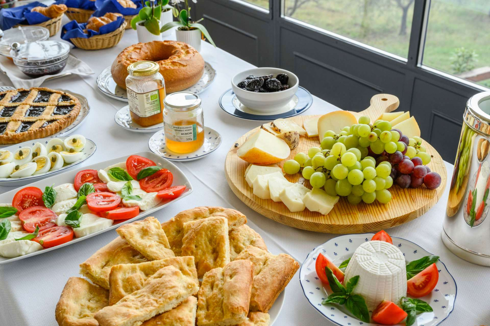

Welcome to Local Bites: Rome Edition!

Discover the best hidden gems in Rome, curated for study abroad students!
It can be overwhelming going abroad and exploring a new city. Rome has so much to offer in terms of food and we’ve done the job for you of finding the best spots! We've carefully curated a selection of eateries that offer delicious meals at student-friendly prices.
Featured Local Bites of the Week

Featured Eatery of the Week
Spotlighting a standout restaurant for you to try.

Local Events
Stay in the loop with food-related happenings around the city.
From charming trattorias tucked away in cobblestone alleys to modern cafes boasting artisanal coffee, you can uncover the finest spots in Rome! Our carefully curated selection of eateries not only features delicious meals but also emphasizes affordability, making them perfect for students on a budget.
Join us as we explore the diverse tastes of Rome, making it easy for you to find your next favorite spot and truly connect with the local culture-one meal at a time!
Best Places to Eat in Rome
